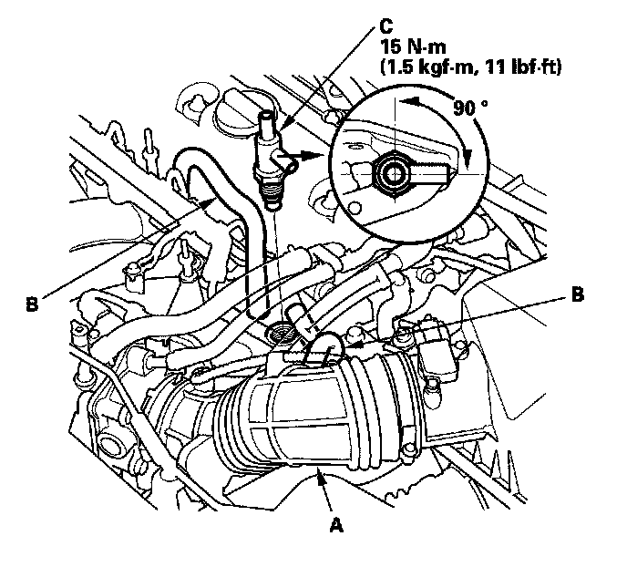

Auxiliary Air Valve (Idle Speed): Service and Repair
Intake Air Bypass Control Thermal Valve Replacement1. Remove the engine cover.

2. Remove the air intake duct (A).
3. Disconnect the hoses (B).
4. Remove the intake air bypass control thermal valve (C).
5. Install the parts in the reverse order of removal.
NOTE: Position the valve angle as shown.